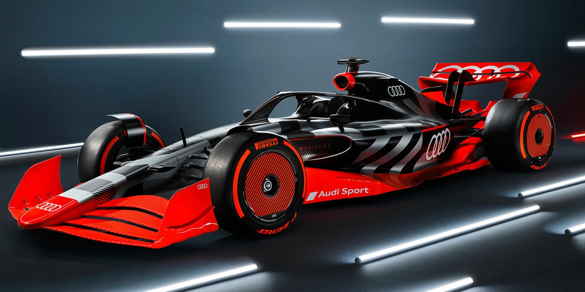

Motorsport tvoří od samého počátku nedílnou součást identity značky Audi. Už v éře Auto Union ve 30. letech minulého století se tato značka zapsala do historie závodění svými stříbrnými monoposty. Tyto vozy, známé jako „Silver Arrows“, dosahovaly rychlostí přes 300 km/h, což bylo na svou dobu ohromující. Jezdcem Auto Unionu byl mimo jiné legendární Bernd Rosemeyer, který se stal ikonou tehdejšího motorsportu. Tento historický odkaz dodnes ovlivňuje přístup Audi k závodění – technická inovace, odvaha a dokonalé inženýrství.
Po druhé světové válce se Audi do motorsportu na čas nevrátilo, ale znovu se výrazně prosadilo v 80. letech. Právě tehdy značka představila technologii quattro, která změnila svět rallye navždy. Systém pohonu všech kol poskytl vozům Audi bezkonkurenční trakci na šotolině, sněhu i asfaltu. Model Audi Quattro se stal ikonou soutěžního světa a neporazitelným soupeřem v Mistrovství světa v rallye (WRC). Piloti jako Michèle Mouton nebo Stig Blomqvist přinesli značce mistrovské tituly a celosvětové uznání.
Další info: Motorsport 1 | Motorsport 2 | Motorsport 3